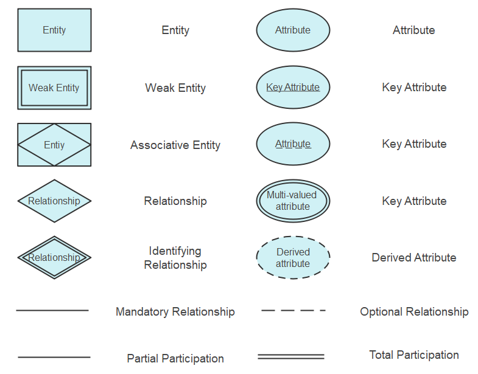
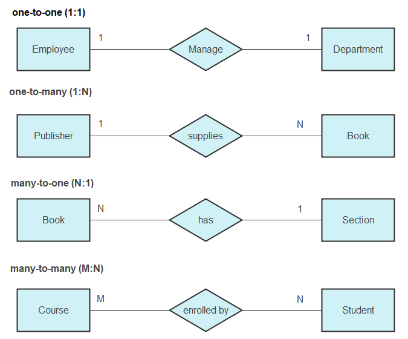
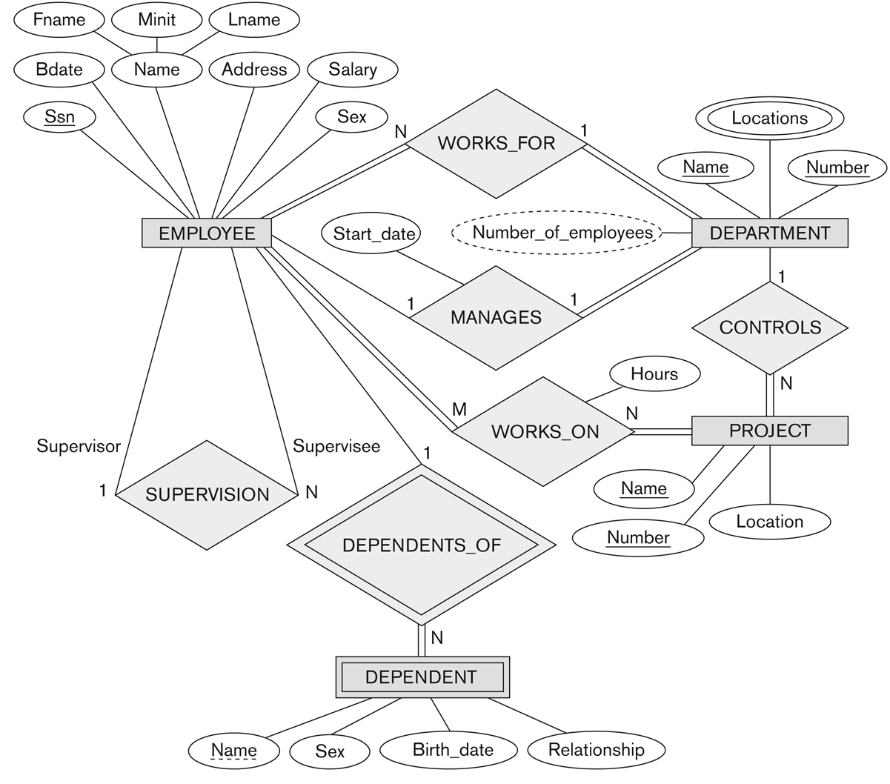

The Entity Relationship Model (ERM) forms the backbone of database design and is a conceptual tool used in the design of data models for relational databases. ERM focuses on identifying the database's structure and its requirements by representing entities, their attributes, and the relationships among them. This model aids in abstracting database design in a visual format, making it easier for developers and stakeholders to understand the database's structure without delving into the complexities of database language or implementation details initially.
1.1 Key Concepts of ERM
The Entity Relationship Model is built around three key concepts: entities, attributes, and relationships. An entity is anything about which data can be collected, such as a person, place, object, event, or concept. Attributes are the properties or characteristics of an entity, providing more detail about it. Relationships define how entities interact with one another.
Entities are represented by rectangles, attributes by ovals, and relationships by diamonds in ER diagrams, a graphical representation of the ER model.
Entities and Attributes
An entity is depicted in an ER diagram as a rectangle containing the entity's name. It is akin to a table in a relational database. Attributes, depicted as ovals connected to their respective entities, are the data we want to collect about an entity. For instance, in a database modeling a school, "Student" could be an entity, with "Name", "ID Number", and "Date of Birth" as its attributes.
Standard Entity
A standard entity is represented by a rectangle. It signifies a strong entity that can exist independently within the database. These entities have a primary key that uniquely identifies each instance.
Weak Entity
A weak entity, shown by a rectangle with a double border, is an entity that cannot exist without the support of another entity (referred to as its owning entity). It does not have a primary key of its own but instead uses a foreign key in conjunction with a partial key of its own.
Associative Entity
An associative entity, depicted by a diamond inside a rectangle, is used to represent a many-to-many relationship as a tangible entity. This is also called a 'link' entity and often holds attributes that are pertinent to the relationship it represents.
Attributes
Attributes, shown as ovals, represent the properties or characteristics of an entity. Key attributes, which are the unique identifiers for the entity instances, are depicted by ovals with an underline. Multi-valued attributes, indicated by double ovals, can have multiple values for a single entity (like multiple phone numbers for a person). Derived attributes, shown with dashed ovals, are attributes whose values can be derived from other database values (such as age, which can be calculated from a birth date).

Figure: ER Diagram Notations
Relationships
Relationships are represented by diamonds and signify how entities are related to each other. An identifying relationship, shown by a diamond with a double border, connects the weak entity with its owner entity. Lines connect the diamonds to the entities they relate to.
The nature of the participation of the entities in the relationship is denoted by the connection lines. A solid line indicates total participation (also known as mandatory participation), where each instance of the entity is involved in the relationship. A dashed line indicates partial participation (also known as optional participation), where it is not necessary for all instances of the entity to be involved in the relationship.
Types of Relationships
Relationships illustrate how two entities share information in a database and are depicted as diamonds in ER diagrams. There are three main types of relationships:
One-to-One (1:1): Each entity in the relationship will have a corresponding entity in another. For example, a person and their passport number.
One-to-Many (1:N): A single entity instance in one entity class is related to multiple entity instances in another class. For example, a teacher teaching multiple courses.
Many-to-Many (M:N): Multiple instances of an entity are associated with multiple instances of another entity. For example, students enrolled in multiple courses.

Figure: Representing Relationship Cardinalities in ER Diagrams
1.2 Creating an ER Diagram
To create an ER diagram, one must identify all entities, their attributes, and the relationships between these entities. This process involves determining the key entities that the database will manage, the information it will hold about those entities, and how those entities interact with each other. By visually mapping out these components, designers can ensure that the database structure is logical, efficient, and normalized to reduce redundancy.

Figure: ER Diagram Example
1.2.1 Practical Application: Designing a Library Management System
In designing a Library Management System using the ER model, we start by identifying the main entities: Books, Members, and Loans. Attributes for Books might include ISBN, Title, Author, and Publication Year; Members could have Member ID, Name, and Contact Information; Loans would detail Loan ID, Loan Date, and Return Date.
Relationships would define how these entities interact: Members take out Loans on Books. This relationship is many-to-many (M:N) since a member can borrow multiple books, and a book can be loaned out to multiple members (though typically one at a time in a real-world scenario). By illustrating these entities and relationships in an ER diagram, we lay the groundwork for a database that captures all necessary information for managing a library.
-- Example SQL implementation for a simplified Library Management System
CREATE TABLE Members (
MemberID INT PRIMARY KEY,
Name VARCHAR(100),
ContactInfo VARCHAR(100)
);
CREATE TABLE Books (
ISBN VARCHAR(13) PRIMARY KEY,
Title VARCHAR(100),
Author VARCHAR(100),
PublicationYear YEAR
);
CREATE TABLE Loans (
LoanID INT PRIMARY KEY,
MemberID INT,
ISBN VARCHAR(13),
LoanDate DATE,
ReturnDate DATE,
FOREIGN KEY (MemberID) REFERENCES Members(MemberID),
FOREIGN KEY (ISBN) REFERENCES Books(ISBN)
);
1.3 Advantages of Using the ER Model
The Entity Relationship Model offers several advantages in database design:
Clarity: ER diagrams provide a clear visual representation of the database structure, making it easier for designers and stakeholders to understand the system's design and requirements.
Flexibility: Changes to the database structure can be easily made at the conceptual level on the ER diagram before implementing them in the database, reducing the complexity of modifications.
Normalization: The process of creating an ER diagram encourages normalization, which organizes data to reduce redundancy and improve database efficiency.
Communication: ER diagrams serve as an effective communication tool among the various stakeholders, including database designers, developers, and business analysts, ensuring a common understanding and agreement on the database design.
Documentation: They provide a useful form of documentation that can be referred to during maintenance and future enhancements, helping to preserve the knowledge of the database structure.
Systematic Design: The ER model promotes a systematic approach to database design, which can lead to more robust and scalable database systems that are less prone to error and easier to manage.
Problem-Solving: It facilitates the identification and solving of design problems early in the development process, which can save time and resources in the long run.
Universality: The use of standardized symbols and notations makes ER diagrams universally understandable by IT professionals who are familiar with these conventions.
1.4 Disadvantages of Using the ER Model
Despite its strengths, the Entity Relationship Model has certain drawbacks when used in database design:
Complexity: For large-scale databases with numerous entities and relationships, ER diagrams can become overly complex and difficult to manage or interpret.
Redundancy Risk: Improperly designed ER diagrams can inadvertently lead to data redundancy, defeating one of the primary purposes of using the model, which is to eliminate redundancy.
Steep Learning Curve: The concepts and notations of the ER model can be difficult for beginners to grasp, which may hinder understanding among stakeholders with less technical background.
Constraint Limitations: ER diagrams may not adequately capture all the data constraints and business rules, leading to potential gaps between the model and the actual system requirements.
Evolution Challenges: ER models may not easily accommodate changes as business requirements evolve, leading to significant redesign efforts.
Standardization Issues: There is a lack of strict standardization across ER diagrams, which can result in inconsistencies and miscommunication among different designers or teams.
Operational Modeling Limitation: ER diagrams primarily focus on the structure of data, often neglecting the operations and transactions that the database will support.
Physical Database Limitations: While ER diagrams are good at representing conceptual and logical models, they do not specify the physical implementation details of the database, leaving a gap that must be bridged by the database designer.
1.5 Mitigating the Disadvantages of the ER Model
While the ER model has its limitations, there are practices and complementary approaches that can mitigate some of its disadvantages:
Modular Design: Breaking down complex ER diagrams into smaller, more manageable modules can reduce complexity and improve readability.
Advanced Normalization: Applying higher levels of normalization meticulously can further reduce data redundancy and improve data integrity.
Education and Training: Providing comprehensive training to stakeholders can improve their understanding and ability to engage with ER models effectively.
Using CASE Tools: Computer-Aided Software Engineering (CASE) tools can help automate the creation and modification of ER diagrams, ensuring consistency and standardization.
Iterative Design: Adopting an iterative and incremental approach to database design can help manage changes and evolution more effectively.
Hybrid Models: Combining the ER model with other data modeling techniques, like UML or ORM, can provide a more complete view of system data and operations.
1.6 Alternative Modeling Techniques
Considering alternative or supplementary data modeling techniques may provide a more holistic approach to database design:
UML (Unified Modeling Language): UML can be used to model not just the data structure but also the behavior of systems, which is something ER diagrams don’t inherently do.
Object-Role Modeling (ORM): ORM focuses on the roles that objects play in interactions, which can sometimes offer a more natural way of capturing business rules and constraints.
Data Vault Modeling: This is a detail-oriented, historical tracking and uniquely linked set of normalized tables that support one or more functional areas of business. It is very agile and adaptable to change.
Dimensional Modeling: Often used in data warehousing, dimensional modeling focuses on usability and the performance of the database, especially in complex query scenarios.
1.7 Best Practices in ER Modeling
To ensure the creation of effective and efficient ER models, certain best practices should be followed:
Clear Naming Conventions: Use intuitive and consistent names for entities, attributes, and relationships to avoid confusion.
Proper Identification of Entities: Correctly identify all entities and ensure that each represents a distinct object or concept within the system.
Use of Subtypes and Supertypes: Implement inheritance hierarchies where appropriate to simplify complex relationships and attribute inheritances.
Minimizing Redundancy: Avoid redundant entities or attributes to prevent unnecessary complexity and potential anomalies.
Validating with Stakeholders: Regularly review ER diagrams with all stakeholders to validate the accuracy and completeness of the model.
1.8 Case Studies: ER Models in Practice
Exploring how ER models have been successfully implemented in various industries can provide practical insights and validate the model's utility:
Retail: Detail how ER models help manage complex inventory and customer relationships.
Healthcare: Explain the role of ER models in managing patient records, appointments, and medical histories.
Education: Discuss the application of ER models in student information systems.
1.9 The Future of ER Modeling
As technology evolves, so does the field of database modeling. The future of ER modeling may include:
Integration with Big Data: Adapting ER models to handle the vast and complex nature of big data structures.
Enhanced Visualization Tools: Development of more advanced tools for creating and managing ER diagrams.
Cloud Databases: Adapting ER models for distributed databases in cloud computing environments.
Artificial Intelligence: Leveraging AI to automate and optimize the creation and maintenance of ER models.